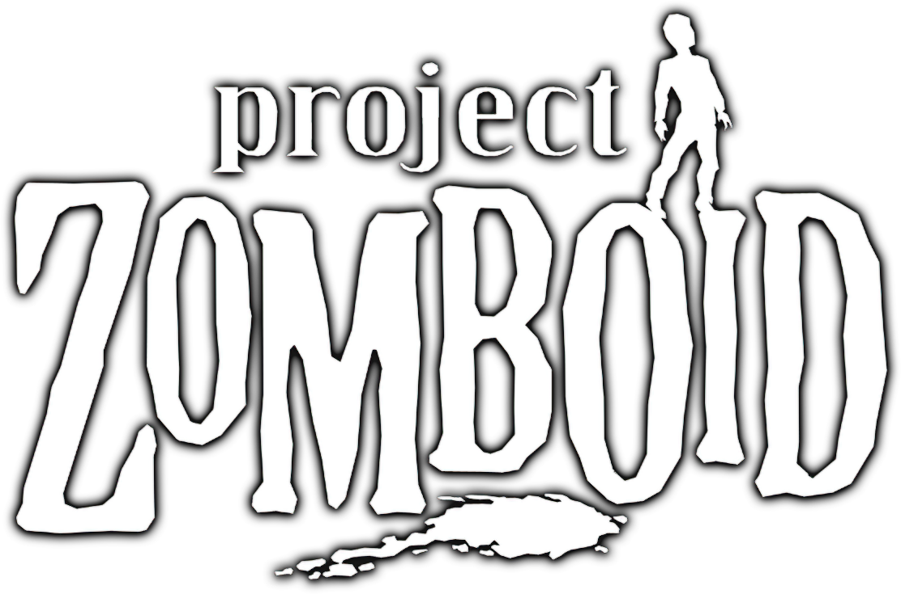

Guia definitiva de

Si estás acá, es porque probablemente compraste el juego y ya moriste un par de veces, o estás pensando en dar tus primeros pasos en el apocalipsis zombi más realista e implacable de la historia de los videojuegos.
A diferencia de otros juegos de supervivencia donde terminás convirtiéndote en un superhéroe armado hasta los dientes, Project Zomboid te deja las cosas claras desde el segundo uno con su ya mítica frase de bienvenida: "Así es cómo moriste".
¿De qué trata Project Zomboid?
Ambientado en el condado ficticio de Knox, Kentucky, durante los años 90, Project Zomboid es un RPG de supervivencia isométrico con un nivel de detalle enfermizo. El gobierno bloqueó la zona debido a una misteriosa infección aérea, y vos sos uno de los pocos sobrevivientes inmunes al aire, pero totalmente vulnerables a las mordeduras, laceraciones y rasguños.
Acá no hay una misión final, no hay una cura que buscar, ni un helicóptero de rescate que vaya a venir a salvarte. El único objetivo es sobrevivir un día más. Para lograrlo, vas a tener que gestionar el hambre, la sed, el cansancio, el aburrimiento, la depresión, las enfermedades, el clima extremo y, por supuesto, a las hordas de infectados que reaccionan a cada ruido y luz que generes.